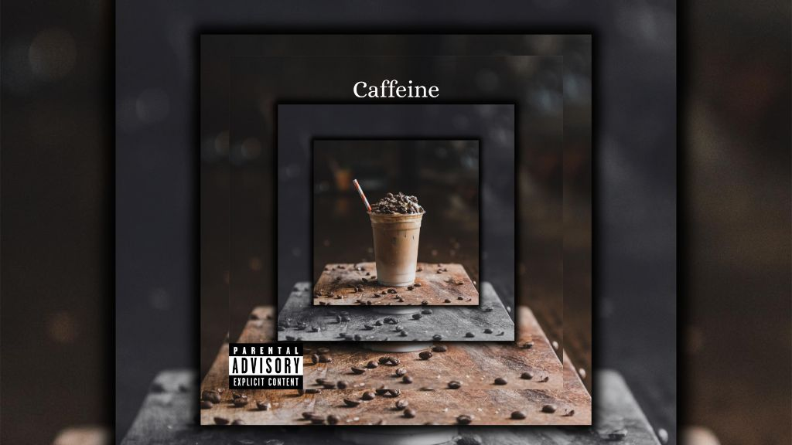

'Kristin Grayden serves up introspection with ‘Caffeine

The following feature is now included in our online magazine which is also available in print.
Issue #10
Online Magazine | Print MagazineAt 23, Perth's Kristin Grayden is making a name for herself in the realm of pop-rock that's not only relatable but infectious. In her latest single, “Caffeine,” which was released on December 31, 2025, she turns the focus inward, addressing the toll of tedium, mental fatigue, and the little things that keep us going in life. This song gives a glimpse into what it's like to go through an 8-to-4 job, with a daily McDonald's breakfast being a substitute for comfort in the midst of a stressful working life.
The interesting thing about “Caffeine” is the way Grayden is able to walk the line between the very personal and the very universal. The track conveys the feeling of ennui that comes with everyday life, all while keeping a strong upbeat pulse. The listener senses the authenticity of her lyrics, but the production, which is all Grayden, is able to keep the track feeling uplifting.
Grayden wrote, edited, and produced the song herself, which is quite unusual for such a young artist. Every detail, from the structure to the delivery, is infused with her perspective and skill. There’s an acknowledgment of the influence that artists such as P!nk have had on the pop-rock sound, but Caffeine does not sound like it borrows from anyone. Rather, it is a product that stems from a place of honesty and has been crafted with care.
The story told through Caffeine is also leading up to Grayden's next album release in May 2026. As a teaser leading up to this release, the song touches on ideas such as resilience, self-reflection, and the ability to find humor in stressful situations—all ideas which seem particularly relevant to listeners as they work through their own schedules and struggles with mental wellness. Even as the lyrics speak to specific ideas such as fast food and office time, the feelings remain very general: exhaustion, longing, and the little victories found in everyday life. "Caffeine" is an important entry in the emerging discography of Kristin Grayden, and it represents the artist’s strengths as a songwriter as much as it represents the artist’s capacity to take experiences and make them into compelling songs. For fans of artists who like to incorporate personal storytelling into their energetic pop rock, Grayden is an important voice to hear because she is honest, witty, and unique.
This dispatch was last updated on January 17, 2026